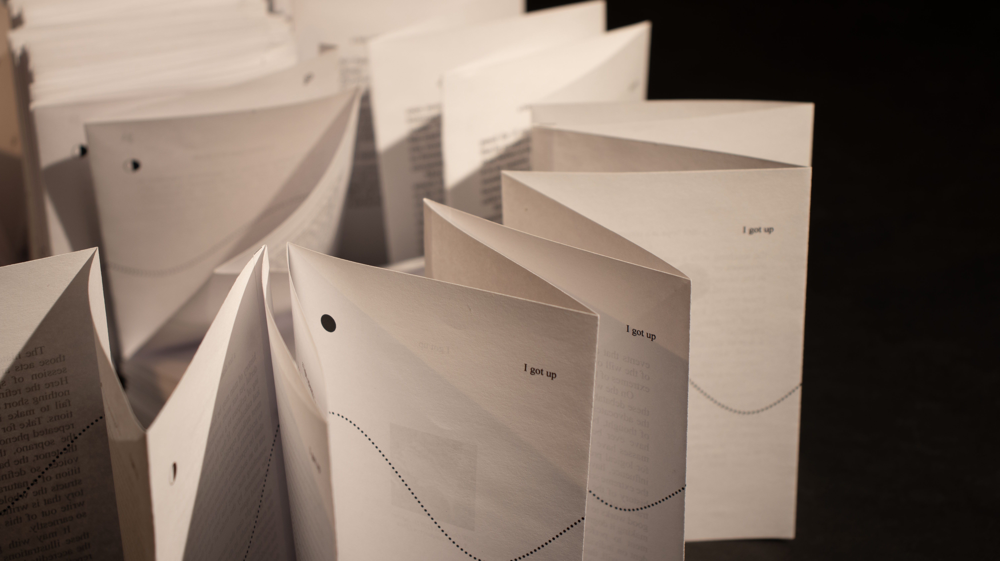
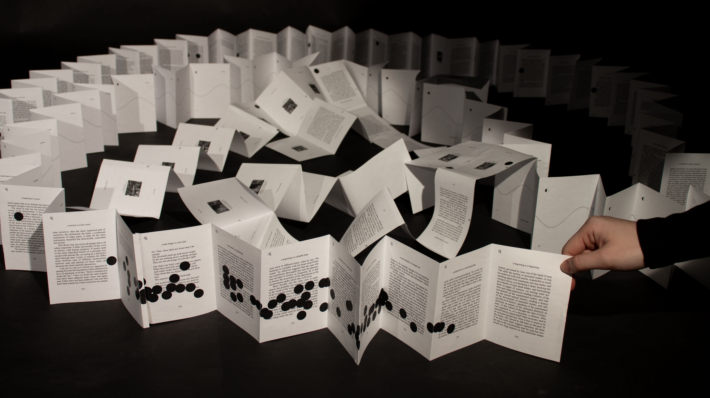
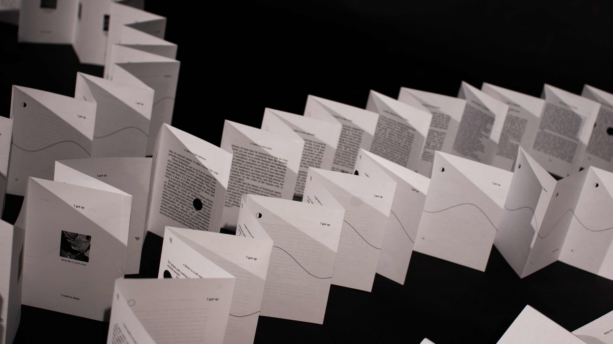
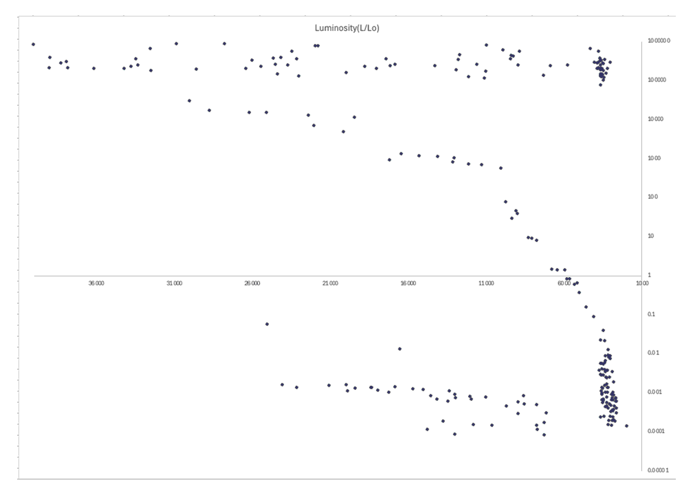
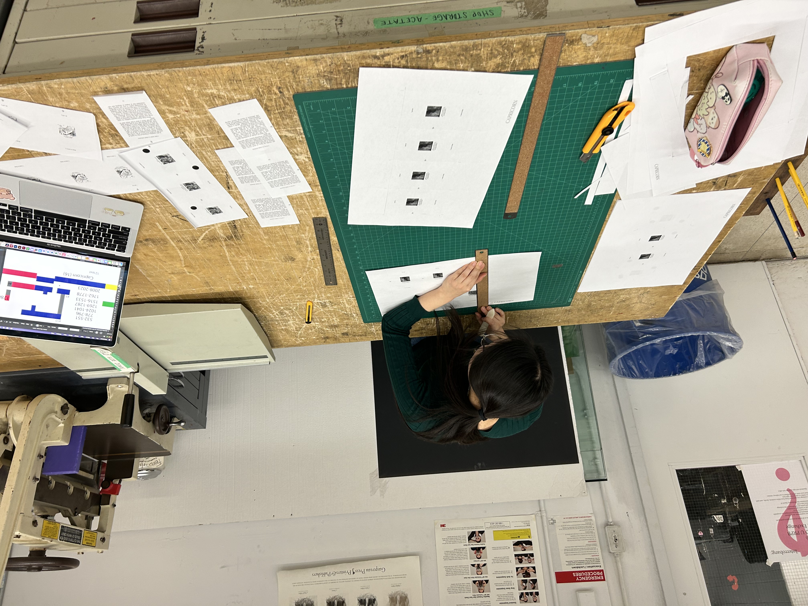
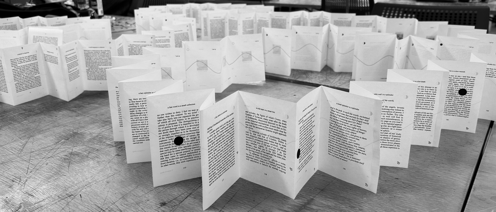

Research
Outcome
Process
Eternal return is a philosophical theory that states time will repeat itself infinitely, and all events will repeat in the exact same way for all of eternity.

The Eternal Return is installed in room 664 in OCAD University's main building. (03.26.2026)
“‘The thing that hath been, it is that which shall be; and that which is done is that which shall be done: and there is no new thing under the sun.’
The selfsame thought is conveyed in the common saying,—‘History repeats itself’”
— Benjamin W. Richardson On the Phenomena of Historical Repetition: A Study of the Relation of Historical to Scientific Research
The Eternal Return is a 70+ foot long folded book about the eternal return, recounting historical events during Pluto’s orbits to show how history repeats itself. Its structure is based on the length of Pluto’s orbit (~248 years): one year equals one page.

The Eternal Return is installed in room 664 in OCAD University's main building. (03.26.2026)
In astrology, Pluto is known as “the Great Renewer” with the ability to influence entire countries and generations.
The project layers a hierarchy of repetitive cycles each with their own measure of time including the alignment of the zodiac constellations, the height of the tide, the moon cycle, and the human routine of waking and sleeping.

The main goal of the project was to explore the limits of human perception and how we miss patterns of repeating events because of how small we are when measured against the cycles of the universe.


The backside of the project features the high and low tide heights of the Bay of Fundy from 01.2026–04.2026, which created a nice animation.

Going from charts to planning to the final outcome.

The assembly of The Eternal Return. (02.04.2026)

The Eternal Return is installed in the sixth floor open studio of OCAD University's main building. (02.05.2026)